Edit Mode - Armature Menu
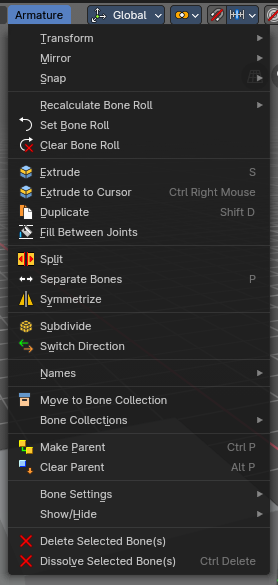
The Edit Mode for Armature objects has a number of operators in this header submenu to change and edit the default bone orientation, relationships and structure before using the Armature in Pose Mode for animation.
Transform - Submenu
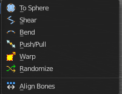
To Sphere
Shapes a selection of objects into the shape of a sphere. The calculation happens with the object origins.
In Object mode this tools requires to have more than one object selected.
Usage
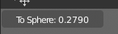
Select the vertices, activate the tool, then drag the mouse in the 3D viewport. In the header you will read the current factor then. Which tells you how close you are towards the sphere shape. With a skeleton the to sphere operation is everything but accurate though. The bones gets stretched or compressed
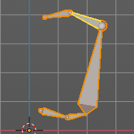
Last Operator To Sphere
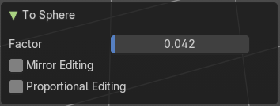
| Entry | What it does |
|---|---|
| Factor | The factor to transform the selection into a shape form. |
| Mirror Editing | Enable mirror editing. |
Proportional editing
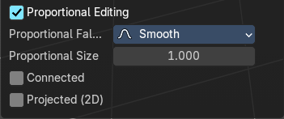
Enables proportional editing. Activating proportional editing reveals further settings.
| Entry | What it does |
|---|---|
| Proportional Falloff | Adjust the falloff methods. |
| Proportional Size | See and adjust the falloff radius. |
| Connected | The proportional falloff gets calculated for connected parts only. |
| Projected(2D) | The proportional falloff. |
Shear
Shear shears the selection.
In Object mode this tools requires to have more than one object selected.
The shear tool works along a imaginary 2d plane. The shear axis controls if the items are sheared along the x or the y axes of this plane. This is the plane along which the transformation happens. You can shear along the x or the y axis of this plane.
To make things even more complicated, the orientation of this imaginary plane is defined by the Axis and Axis Ortho items below.
Last Operator Shear
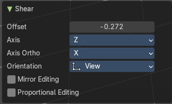
Offset
Adjust an offset.
Axis
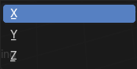
Defines one axis of the imaginary shear axis plane.
Axis Ortho
Defines the other axis of the imaginary shear axis plane.
| Entry | What it does |
|---|---|
| Orientation | Choose the orientation for the shear action. |
| Mirror Editing | Enable mirror editing. |
Proportional editing
Enables proportional editing. Activating proportional editing reveals further settings.
| Entry | What it does |
|---|---|
| Proportional Falloff | Adjust the falloff methods. |
| Proportional Size | See and adjust the falloff radius. |
| Connected | The proportional falloff gets calculated for connected parts only. |
| Projected(2D) | The proportional falloff gets calculated in the screen space. Depth doesn't play a role. When it's in the radius, then it gets calculated. |
Bend
Bends the selection.
Push/Pull
It pushes or pulls the object positions relative to the center of the selection.
In Object mode this tool requires to have more than one object selected.
Last Operator Push/Pull
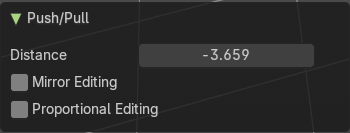
| Entry | What it does |
|---|---|
| Distance | Adjust the distance of influence of the tool. |
| Mirror Editing | Enable mirror editing. |
Proportional editing
Enables proportional editing. Activating proportional editing reveals further settings.
| Entry | What it does |
|---|---|
| Proportional Falloff | Adjust the falloff methods. |
| Proportional Size | See and adjust the falloff radius. |
| Connected | The proportional falloff gets calculated for connected parts only. |
| Projected(2D) | The proportional falloff gets calculated in the screen space. Depth doesn't play a role. When it's in the radius, then it gets calculated. |
Warp
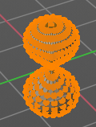
Warps a mesh selection between two defined points.
Last operator Warp
| Entry | What it does |
|---|---|
| Warp Angle | The strength of the warp effect |
| Offset Angle | An offset angle to bend sidewards. |
Min
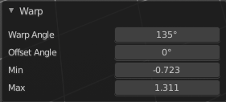
The start point.
Max
The end point.
Randomize Transform
This tool allows randomizes the positions of the selected vertices.
Last Operator Randomize Transform

| Entry | What it does |
|---|---|
| Amount | Adjust the amount. |
| Uniform | The uniform offset distance. |
| Normal | Align the offset direction to the normals. |
| Random Seed | The seed value for randomization. |
Align Bones
Aligns the selected bones to the orientation of the active bone.
Mirror
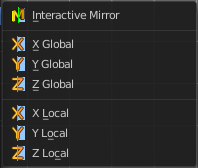
Mirror mirrors the selected geometry along the defined axis.
Interactive Mirror
Mirror by hotkeys. You activate the tool, type in x for x global for example, or x x for x local. And the selection gets mirrored
X Global, Y Global etc.
Mirrors the selection around the chosen axis.
Last Operator Mirror
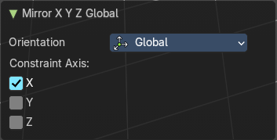
The Last Operator Mirror panel gives you tools to adjust the mirror action.
Orientation

Orientation is a drop-down box. Choose the type of orientation for the mirroring action.
Constraint Axis
Constraint Axis gives you again the possibility to define the mirror axis. You can choose more than one axis here.
Snap

Choose several methods to snap one element to another. The menu items should be self explaining.
Last operator Snap Selection to Cursor
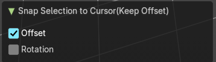
Some snap operations shows a last operation panel, some not.
| Entry | What it does |
|---|---|
| Offset | If the selection should snap as a whole, or if each individual element of the selection should snap. |
| Rotation | If the selection should be rotated to match the cursor. |
Recalculate Bone Roll - Submenu
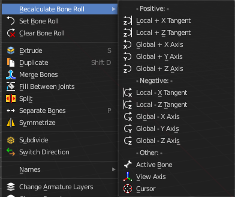
Recalculate Bone Roll Recalculate Roll is a menu where you can recalculate the bone roll in various ways.
The menu items are pretty self explaining. So we will not repeat the descriptions here.
Last Operator Recalculate Roll
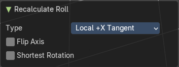
Type
Type is a drop-down box. Choose the recalculation method again.
Flip Axis
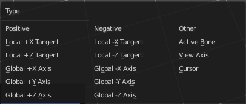
Negates the alignment axis.
Shortest Rotation
Ignore the axis direction, and use the shortest rotation to align the bone(s)
Set Bone Roll
This operation is relative to the starting value, and starts always with zero. It does not display the Bone Roll value from the Transform panel. It adds or subtracts the amount of the operation to/from the Roll value then.
While operating you will see the current relative Roll value in the header.
Last Operator Transform
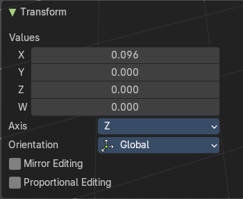
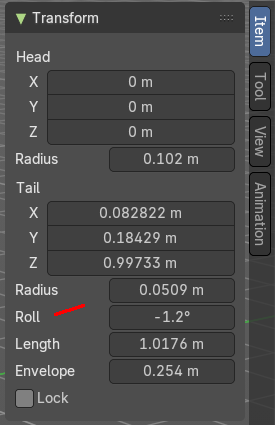
The only interesting value is the X value right at the top. The other settings here are simply dysfunctional. You cannot turn on proportional editing, axis and orientation doesn't play any role since it always rotates around the bone orientation. And so we will not go into detail here.
Unfortunately even the X value to display the amount of the roll is broken. It displays the amount in Radians, while the Bone roll is in degrees.
Values
The vector 4 values.
Axis
Defines one axis of the imaginary shear axis plane.
Orientation
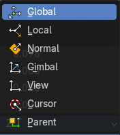
Choose the orientation for the shear action.
Mirror Editing
Enable mirror editing.
Proportional editing
Enables proportional editing. Activating proportional editing reveals further settings.
| Entry | What it does |
|---|---|
| Proportional Falloff | Adjust the falloff methods. |
| Proportional Size | See and adjust the falloff radius. |
| Connected | The proportional falloff gets calculated for connected parts only. |
| Projected(2D) | The proportional falloff. |
Clear Roll
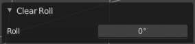
Set the bone roll value directly.
Last Operator Clear Roll
Roll
Set the bone roll.
Single Operators
Extrude
Extrudes out a bone from the selected joints.
Last Operator Extrude
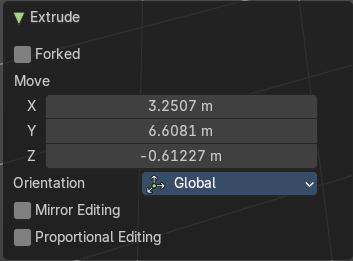
Forked
You need to tick X Axis Mirror. When you tick Forked, then the bone that you extrude to the one side will now be extruded to the other side too. The extrude gets mirrored along the x axis. This allows you to create a symmetrical armature.
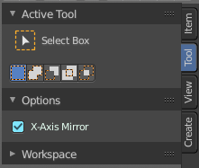
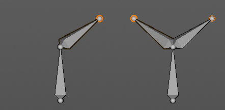
Move X , Y, Z
The transform values for the new created joint(s)
Orientation

Orientation is a drop-down box. Choose the type of orientation for the mirroring action.
| Entry | What it does |
|---|---|
| Mirror Editing | Enable Mirror Editing. |
| Proportional editing | Enables proportional editing. Activating proportional editing reveals further settings. · Proportional Falloff: Adjust the falloff methods. · Proportional Size: See and adjust the falloff radius. · Connected: The proportional falloff gets calculated for connected parts only. · Projected(2D): The proportional falloff gets calculated in the screen space. Depth doesn't play a role. When it's in the radius, then it gets calculated. |
Extrude to Cursor
Hotkey only tool. Extrude to the mouse position.
Last Operator Extrude to Cursor or Add
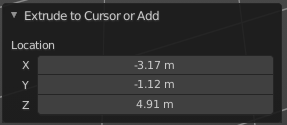
Location X Y Z
The location to extrude to.
Duplicate
Duplicates selected bones.
You are automatically in grab mode, and so you can easily move the object out of position. Which is sometimes wanted, since you can position the duplicate then. But sometimes this is unwanted. A right click after releasing the mouse lets the object snap back into its creation position.
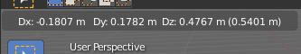
When you drag the duplicate around you will see the position values in the header.
Last Operator Duplicate
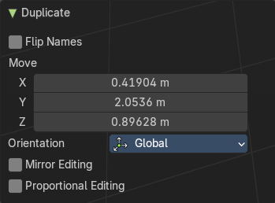
| Entry | What it does |
|---|---|
| Duplicate Objects | Flip Names: Tries to flip the names of the bones. This is a name convention feature. When you have a bone called mybone.R, then it tries to become mybone.L |
| Move X , Y , Z | The Position of the duplicated object. |
Orientation
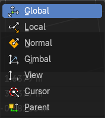
Orientation is a drop-down box choose the type of orientation for the mirroring action.
Mirror Editing
Enable Mirror Editing.
Proportional editing
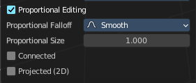
Enables proportional editing. Activating proportional editing reveals further settings.
| Entry | What it does |
|---|---|
| Proportional Falloff | Adjust the falloff methods. |
| Proportional Size | See and adjust the falloff radius. |
| Connected | The proportional falloff gets calculated for connected parts only. |
| Projected(2D) | The proportional falloff gets calculated in the screen space. Depth doesn't play a role. When it's in the radius, then it gets calculated. |
Fill between Joints
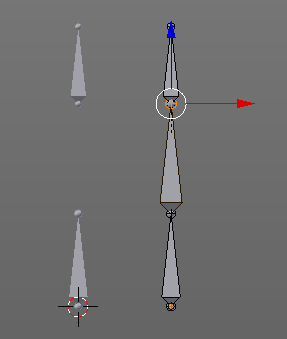
Fill between joints fills a bone between two selected joints.
When there is just one joint selected, then the bone is created between this selected joint and the 3D cursor.
| Entry | What it does |
|---|---|
| Split | Split splits the selected bone(s) from connected bones. They are still part of the armature. But the bone is now floating. And you can pull this bone(s) around without pulling the rest of the armature around. The Last operator for Split has no content. |
| Separate Bones | Separate separates the selected bone(s) from the armature. And creates a new, independent, armature. The Last operator for Separate has no content. |
Symmetrize
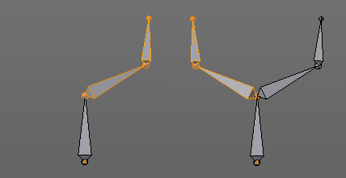
Creates a symmetrical mirrored copy of the currently selected bones along the X axis. The mirror centre is the pivot of the armature.
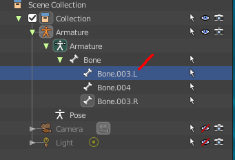
The bones that you want to symmetrize needs to follow the left right name conventions for bones. Bones without this left right naming are not affected by the tool. If there is a lower or upper case “L”, “R”, “left” or “right” with a separating dot in the bone name, then this tool creates and renames the bones names to its counter part. Bone.L becomes Bone.R.
Last Operator Symmetrize
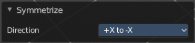
Direction
Define the calculation direction. From -X to + X or from +X to -X
Subdivide
Subdivide subdivides the current selection.
Last Operator Subdivide Multi
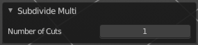
Number of Cuts
Adjust the number of subdivisions.
Switch Direction
Switches the direction in which the selected bones are pointing.
Names - Submenu
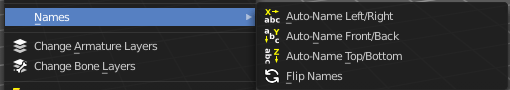
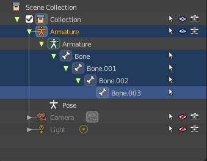
Bforartists has some internal name conventions for a symmetrical armature. Bones are for example named mybone.L or mybone.R, dependant at which side of the mirror axis they are. The Names items allows you to rename the bone names to this name convention.
| Entry | What it does |
|---|---|
| Autoname Left/Right | Renames the bones from left to right. |
| Autoname Front/Back | Renames the bones from front to back. |
Autoname Top/Bottom
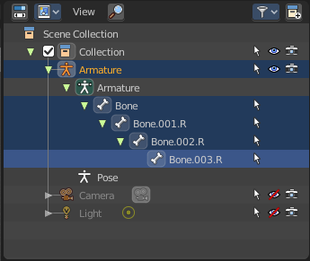
Renames the bones from top to bottom.
Last operator Autoname by Axis
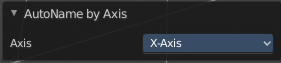
Axis
Choose the autoname axis again. Left/Right is X axis, Front/Back is Y axis, and Top/Bottom is Z axis.
Flip Names
When you mirror a half of an armature you end in names like Bone.001.R.001. But what we need is Bone.001.L for a symmetrical armature. Flip names flips the names to follow the left right name conventions.
Last operator Flip Names
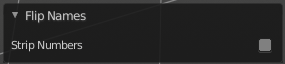
Strip Numbers
Tries to remove the numbers in the names if possible.
About Bone Collections
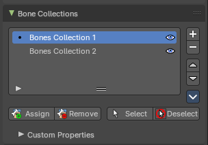
Bone Collections is a menu to handle bone collection functionality from within a menu in the 3D View editor. The bone collections themselves can be found in the Properties editor then in the Armature tab.
Move to Bone Collection
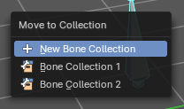
Armature and bones have their own collection system. This menu item opens a popup where you can put the selected bones into a New Collection or an existing Bone Collection.
| Entry | What it does |
|---|---|
| New Bone Collection | Assigns the selected bones to a new Bone Collection. This will prompt to name the new collection. |
| Bone List | Assigns or unassigns the selected bones to or from the collection. The green + icon and red – icon show if you can remove or add a bone to the listed collection. |
Bone Collections – Sub Menu
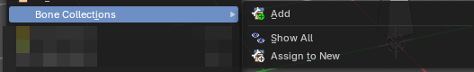
Armature and bones has its own collection system.
Add
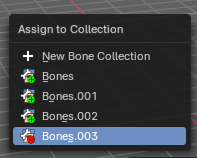
Add or remove the bone from the listed bone collections. The green + icon and red – icon show if you can remove or add a bone to the listed collection. A bone can be in multiple collections at the same time.
| Entry | What it does |
|---|---|
| New | Assigns the selected bones to a new Bone Collection. This will prompt to name the new collection. |
| Bone List | Assigns or unassigns the selected bones to or from the collection. The green + icon and red – icon show if you can remove or add a bone to the listed collection. |
Show All
Show all bone collections.
Assign to New
Add selected bones to a new collection with a new name.
Last Operator Add Selected Bones to Collection
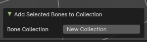
Bone Collection
Change name of the new collection.
Make Parent
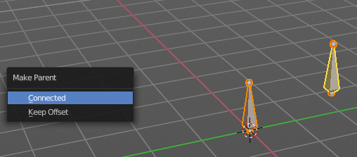
Adds a parent relationship.
Select a bone, hold down shift, select the bone that you want to parent it to. Perform Make Parent. In the pop-up choose the method that you want to use.
Connected
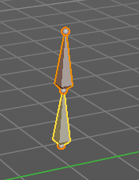
The child bone will jump to the position of the tail joint of the parent bone.
Keep Offset
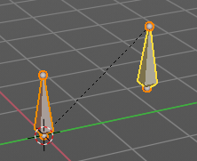
The bone will remain in its original position. The relationship will be displayed by a black dotted line.
Last Operator Make Parent
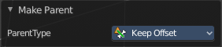
Parent Type
Choose between Connected and Keep Offset method again.
Clear Parent
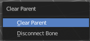
Clears the parent relationship of the selected bone(s). It calls a pop-up menu. Choose between two methods.
| Entry | What it does |
|---|---|
| Clear Parent | Clears the parent relationship of the selected bone(s). |
| Disconnect Bone | The parent ship is kept. Turns a Connected parent relationship into a Keep Offset parent relationship. You can move the disconnected bone around without to pull the parent with it. |
Last Operator Clear Parent
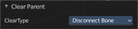
Clear Type
Choose between Clear Parent and Disconnect Bone method again.
Bone Settings - Submenu
Bone Settings is a menu with menu items to toggle special checkboxes in the Properties editor. But here you can do it for a selection too, and not just one object.
Last Operator Collection Boolean Set
Each of the menu items uses the same Last Operator. With different strings for the booleans.
Show/Hide – Submenu
Show or hide the selected bones in the viewport.
| Entry | What it does |
|---|---|
| Show Hidden | Makes all bones visible again. |
| Hide Selected | Hides the selected bones. |
| Hide Unselected | Hides the not selected bones. The selected bones stays visible. |
Delete Selected Bone(s)
Deletes the selected bones. The hierarchy is kept. The involved bones becomes disconnected.
Dissolve Selected Bone(s)
Merges the selected bone or joint with its hierarchical neighbour bones.